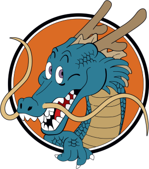

Mundo DBZ

Dragon Ball
- Oolong desejou uma calcinha da Bulma.
- Goku desejou que Bura, o índio que foi morto por Tao Pai revivesse.
- Kuririn, Mestre Kame, Chaoz são revividos depois da luta contra Piccolo Daimaoh

Dragon Ball Z
- Goku é revivido para lutar contra os sayajins.
- Dende desejou que Piccolo voltasse a vida.
- Dende desejou que Piccolo fosse para Namekusei.
-
Sr. Popo desejou que todas as pessoas mortas por Freeza voltassem
a vida.
-
Dende deseja que todos que estavam em Namekusei, menos Goku e
Freeza voltassem pra Terra.
- Um novo planeta para os Namekusei-jins.
- Tenshinhan, Chaoz, Yamcha e Kuririn são revividos.
-
Goku deseja que todos os mortos por Cell ressussitem, antes do
Jogo de Cell.
- Trunks é revivido depois da luta com Cell.
-
Kuririn deseja que a #18 se torne humana e que a bomba que ela
possuia em seu corpo fosse retirada.
-
É desejado que a Terra voltasse a existir e reviver os mortos
depois da luta contra Boo.

Dragon Ball GT
- Pilaf deseja, sem querer, que Goku virasse criança de novo.
- Bebi deseja que o planeta Plant volte a existir.
-
É desejado que a Terra seja restaurada, depois da saga de Bebi.
-
É desejado que todos os mortos pelos dragões, Kuririn e #18 sejam
revividos, depois da saga dos evil Shenlongs.